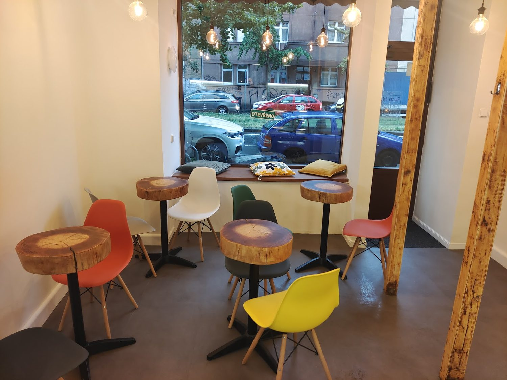
Kavárna a cukrárna na Vršovické, kousek od nádraží. Chlebíčky, domácí zákusky a káva.
Ceny píšeme křídou na tabulky ve vitríně.
Odhad útraty na jednoho, jak ho na Googlu uvádějí návštěvníci100–200 Kč
Vitrína, stolky z kmenů, barevné židle a v létě posezení na chodníku.
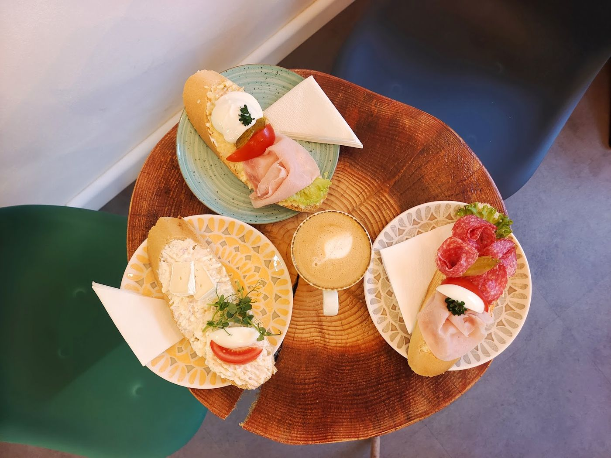
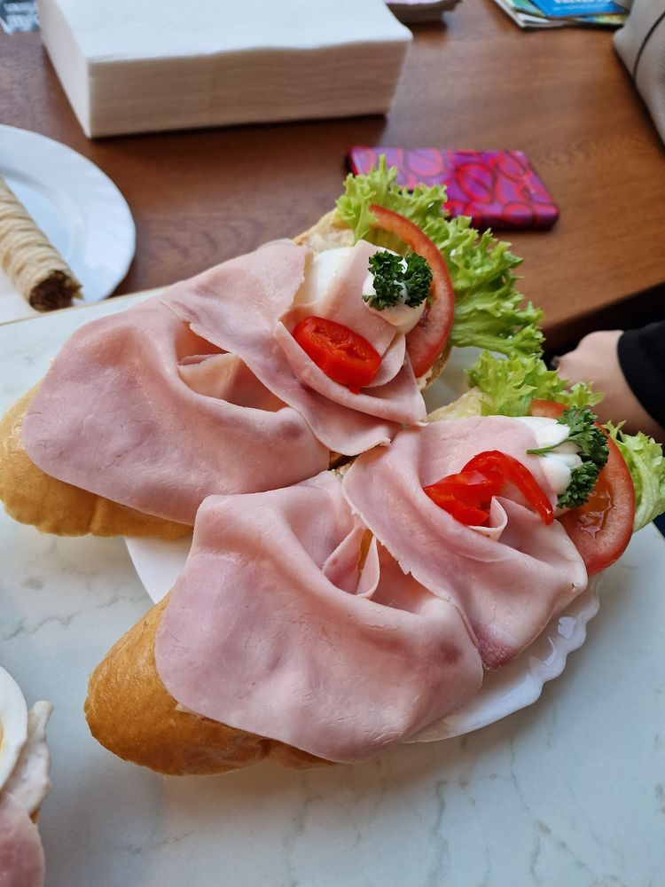
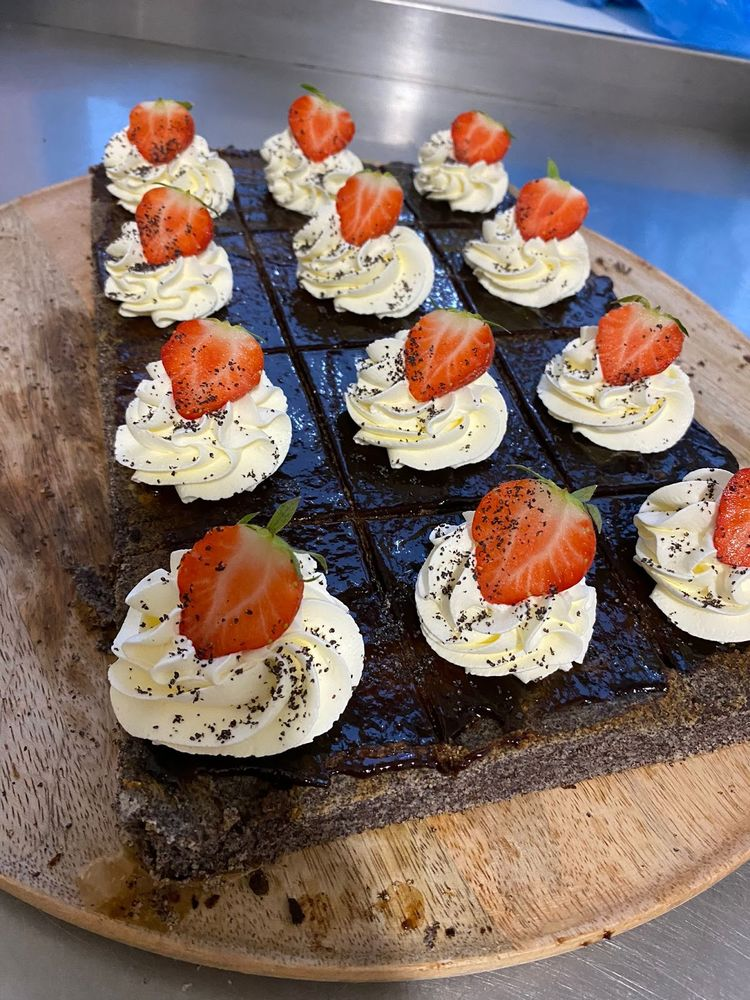
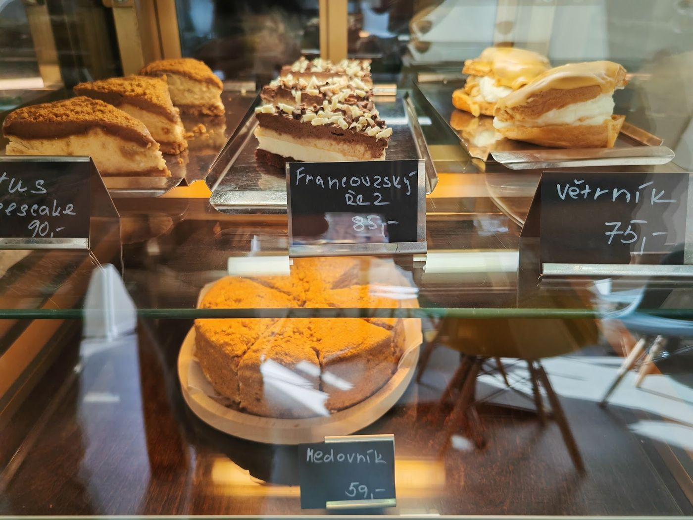
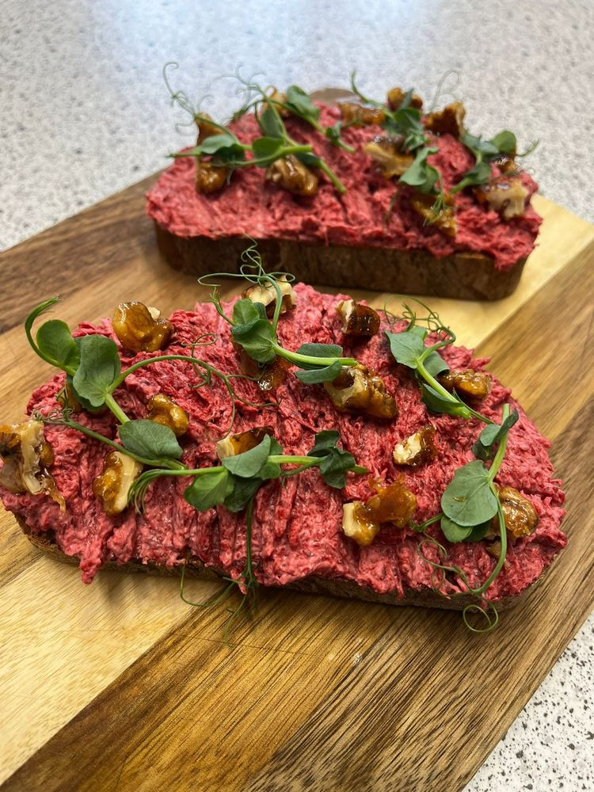
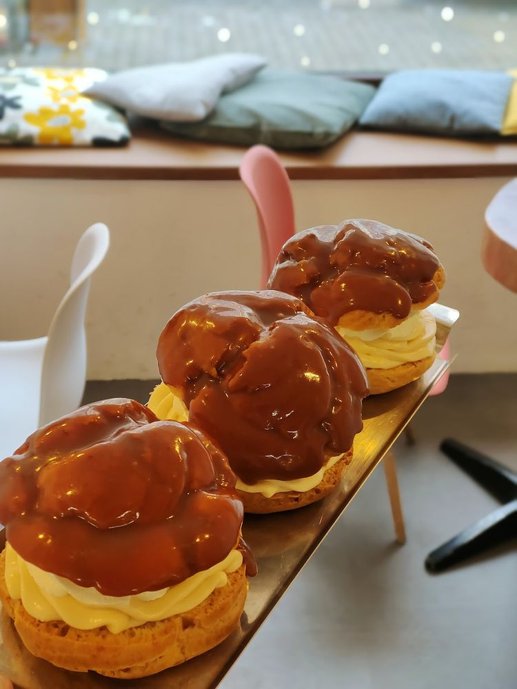
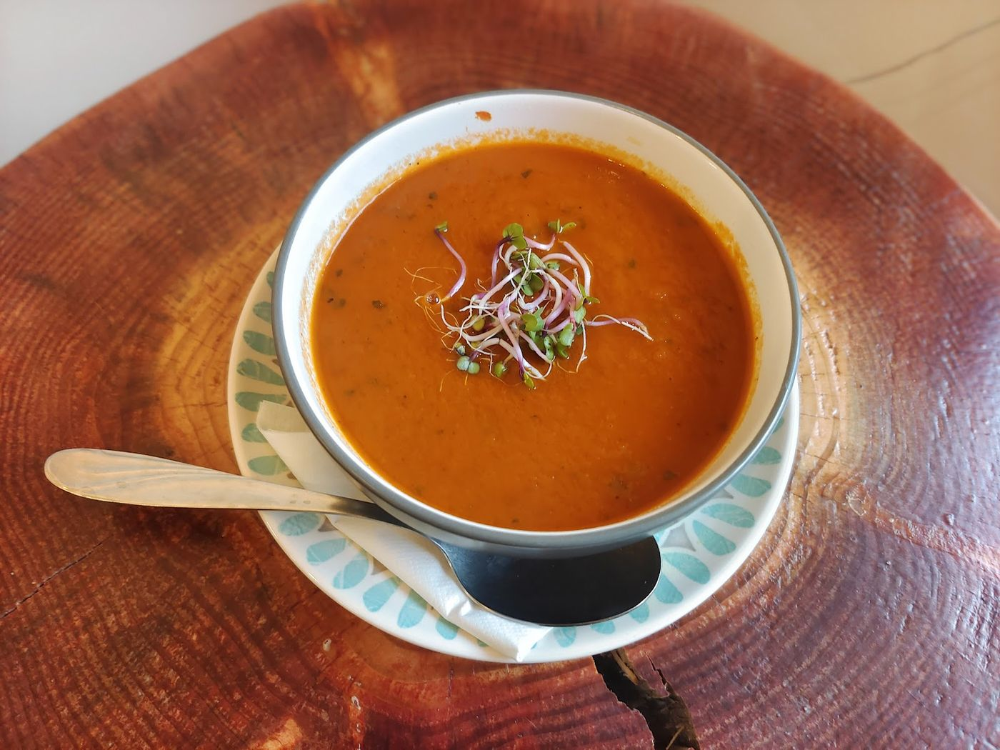
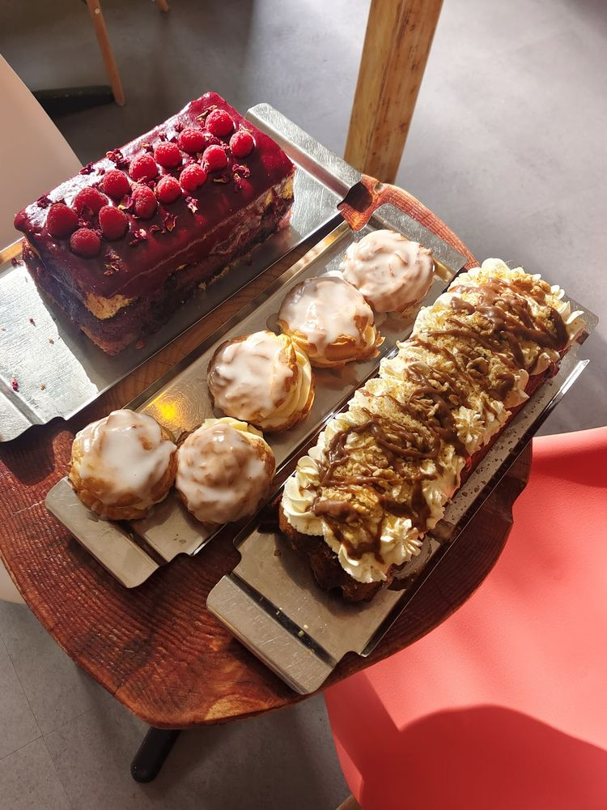
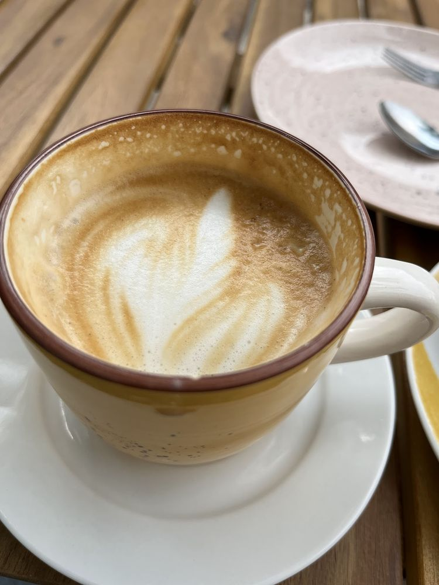
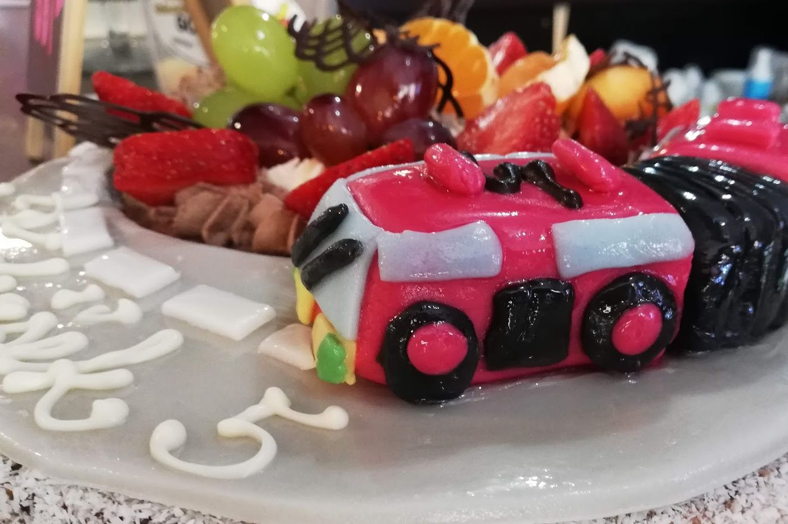
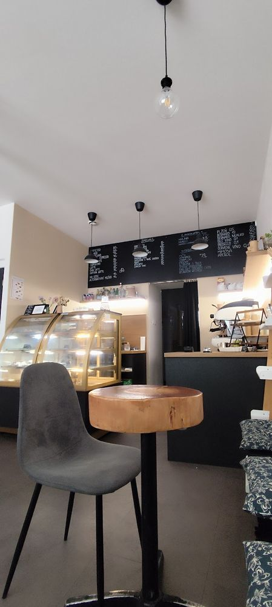
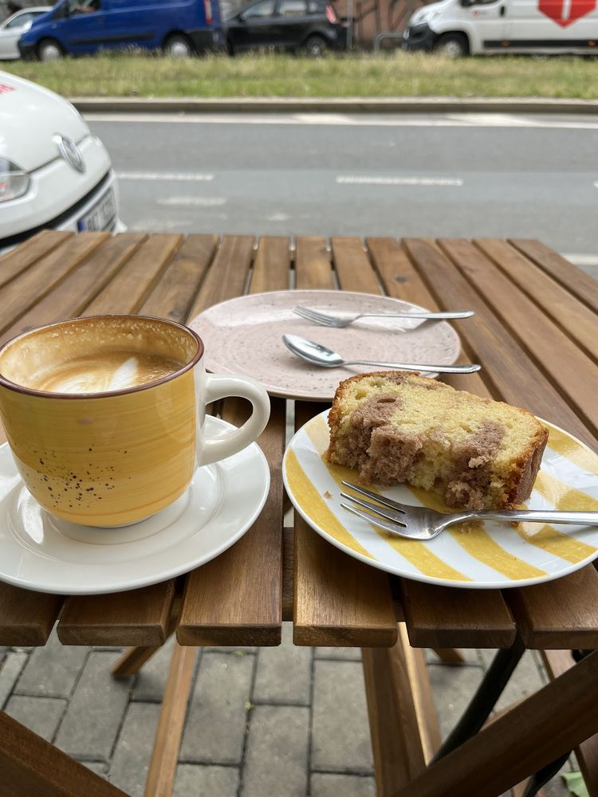
Trasa„Chlebíčky jsou opravdu velké, jeden vydá za dva běžné.“
4,8 ze 181 recenzí na Googlu.
„Malá, příjemná kavárna u Vršovického nádraží. Vždy se těším, když mám cestu kolem nejen kvůli výborné kávě, ale vždy milé a přátelské obsluze – hlavně příjemného pána, který vždy popřeje hezký den. Chválím také obložené chleby a polévky. Stojí za to se zastavit.“
„Velmi příjemné a útulné místo. K dispozici je posezení uvnitř i venku. … Dala jsem si Flat White – káva byla jemná, vyvážená a bez přepražené chuti. Ráda se sem zase vrátím!“
„Moje návštěvy do této kavárny se staly pravidelností, každou sobotu se zastavím pro něco nově upečeného a nikdy nejsem zklamaná. Určitě doporučuji všem.“
„Tahle kavárna je nejlepší na světě (Majda, 6 let).“
Vršovická 866/3, pár set metrů od Vršovického nádraží.
| Pondělí | 8:00 – 18:00 |
|---|---|
| Úterý | 8:00 – 18:00 |
| Středa | 8:00 – 18:00 |
| Čtvrtek | 8:00 – 18:00 |
| Pátek | 8:00 – 18:00 |
| Sobota | 9:00 – 15:30 |
| Neděle | Zavřeno |